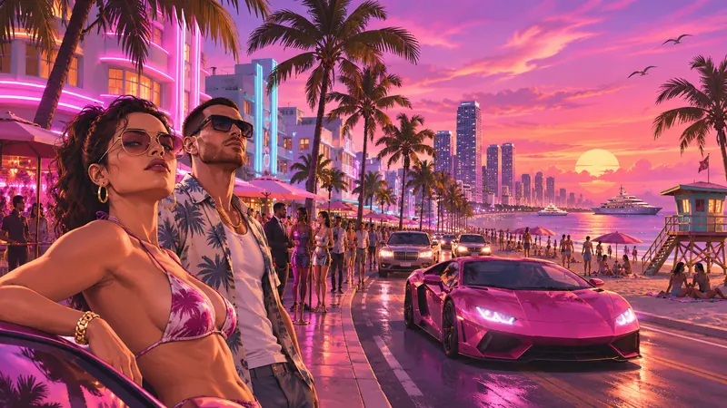

Mapa interactivo de GTA 6
Todo Leonida en un solo mapa: Vice City, los Cayos, Grassrivers, Port Gellhorn, Ambrosia y Mount Kalaga, con bancos, cajeros, tiendas, vehículos y mucho más.
Fuente del mapa: MapGenie · Official Grand Theft Auto 6 Map. Lo mostramos con el código de inserción oficial que ofrece MapGenie; el mapa, sus marcadores y sus datos son de MapGenie (mapgenie.io), no de GTA MASTER.

Leonida · mapa completo
Explora Leonida
Se carga desde mapgenie.io, que puede usar sus propias cookies. Más información en nuestra política de privacidad.Mapa: MapGenie (mapgenie.io) · Grand Theft Auto VI © Rockstar Games · Abrir el mapa a pantalla completa en MapGenie
Cómo usar el mapa de GTA 6
- Filtra por categoría. En el panel de la izquierda activa o apaga cada tipo de punto: puntos de interés, atracos, vehículos, ropa y estilo, comida y bebida.
- Busca un lugar. Escribe el nombre de una tienda, un garaje o una zona en el buscador del panel.
- Día y noche. Cambia el aspecto del mapa con los botones Day y Night de la esquina inferior derecha.
- Guarda tu progreso. Con una cuenta gratuita de MapGenie puedes marcar lo que ya has encontrado.
Las 6 regiones de Leonida
- Vice City · Inspirada en Miami
- Leonida Keys · Inspirada en los Cayos
- Grassrivers · Inspirada en los Everglades
- Port Gellhorn · Puerto e industria
- Ambrosia · El interior rural
- Mount Kalaga · Parque nacional